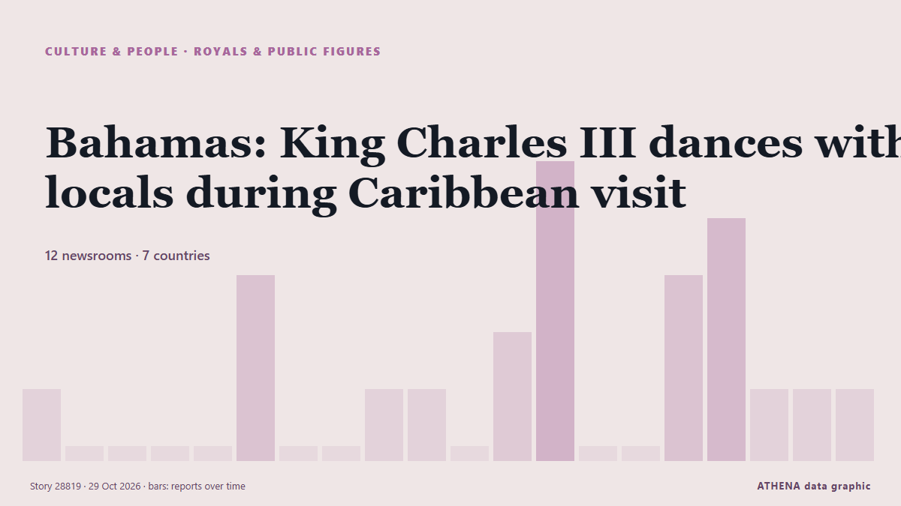

Bahamas: King Charles III dances with locals during Caribbean visit

King Charles III showed off his dance moves during a colourful Junkanoo street parade in Nassau, the capital of the Bahamas, on Wednesday, 28 October, as part of his first Caribbean tour since… from Euronews English
Reported independently by 12 outlets in 7 countries since 24 Oct, first by BBC News; coverage is fading. Sport and culture stories are filed, not risk-assessed. Confidence is 88% (high), with 12 independent outlets corroborating it and an average source reliability of 75%. Who reported it: 15 newsrooms in United Kingdom, 2 newsrooms in United States, 2 newsrooms in Ghana. The coverage ran from 24 Oct to 29 Oct, over 116 hours.
Why it matters: This tracker follows the conflict involving Israel, Gaza, the West Bank and Lebanon — military events, humanitarian conditions and diplomacy — as covered by newsrooms around the world.
What changed: 8 new reports from 7 newsrooms in the 24 hours to 29 Oct.
First reported as: King Charles acknowledges ‘suffering of the past’ as Caribbean tour begins
At a glance
Selected, scored and written by ATHENA's published methodology. No editor intervenes in individual events. How this is produced ›
| 24 Oct 23:03 UTC | 1 |
|---|---|
| 25 Oct 05:03 UTC | 0 |
| 25 Oct 11:03 UTC | 0 |
| 25 Oct 17:03 UTC | 0 |
| 25 Oct 23:03 UTC | 0 |
| 26 Oct 05:03 UTC | 3 |
| 26 Oct 11:03 UTC | 0 |
| 26 Oct 17:03 UTC | 0 |
| 26 Oct 23:03 UTC | 1 |
| 27 Oct 05:03 UTC | 1 |
| 27 Oct 11:03 UTC | 0 |
| 27 Oct 17:03 UTC | 2 |
| 27 Oct 23:03 UTC | 5 |
| 28 Oct 05:03 UTC | 0 |
| 28 Oct 11:03 UTC | 0 |
| 28 Oct 17:03 UTC | 3 |
| 28 Oct 23:03 UTC | 4 |
| 29 Oct 05:03 UTC | 1 |
| 29 Oct 11:03 UTC | 1 |
| 29 Oct 17:03 UTC | 1 |
Why these numbers
Importance
Risk
Confidence
The reporting — who reported it, and when
headline as published · opens the original- BBC News · United KingdomWhy the King's Caribbean tour could be 'biggest risk of his reign'
- ABC News (International) · United StatesCaribbean seeks reparations and questions role of monarchy before King Charles visits
- Belfast Telegraph · United KingdomCaribbean seeks reparations and questions monarchy’s role on eve of King’s visit
- The Irish News (Belfast) · United KingdomCaribbean seeks reparations and questions monarchy’s role on eve of King’s visit
- The New York Times (World) · United StatesWhat Is the Commonwealth? What to Know as King Charles Hosts Meeting in the Caribbean
- Bangkok Post — page reader · ThailandReparations calls overshadow King Charles’ Caribbean trip
- Belfast Telegraph · United KingdomKing to acknowledge ‘great suffering of the past’ during visit to Caribbean
- The Irish News (Belfast) · United KingdomKing to acknowledge ‘great suffering of the past’ during visit to Caribbean
- The Irish News (Belfast) · United KingdomKing acknowledges ‘great suffering of the past’ during visit to Caribbean
- Belfast Telegraph · United KingdomKing acknowledges ‘great suffering of the past’ during visit to Caribbean
- MyJoyOnline · GhanaKing Charles acknowledges ‘suffering of the past’ as Caribbean tour begins
- Evening Standard (London) · United KingdomCharles to meet with Bahamas’ prime minister and governor general during visit
- BBC News · United KingdomKing acknowledges 'suffering of the past' as Caribbean tour begins
- Belfast Telegraph · United KingdomKing honours fallen troops in solemn start to second day of Caribbean tour
- The Irish News (Belfast) · United KingdomKing honours fallen troops in solemn start to second day of Caribbean tour
- BBC News · United KingdomWatch: King dances in the streets of the Bahamas capital
- MyJoyOnline · GhanaKing Charles shows off dance moves on second day of Caribbean tour
- Sydney Morning Herald · AustraliaKing Charles gets into the groove in Bahamas
- The Irish News (Belfast) · United KingdomCharles to mark milestone in British-Guyana relations as state visit rolls on
- Antigua Observer · Antigua and BarbudaKing Charles acknowledges past injustices ahead of Commonwealth talks in Antigua
- Euronews English · FranceBahamas: King Charles III dances with locals during Caribbean visit
- Evening Standard (London) · United KingdomKing’s visit to the Bahamas hailed as ‘strong diplomatic success’
- The Irish News (Belfast) · United KingdomCharles arrives in Guyana for next leg of Caribbean tour